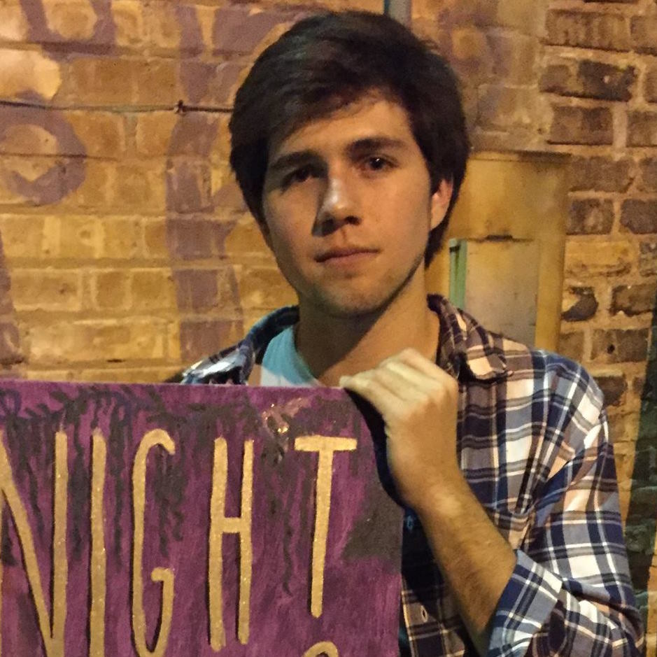

Night Hikes


Night Hikes is Olivia Godby and Matthew Farrell. Having become friends in college, the two started writing music in the fall of 2015. They were quickly embraced by the South Bend music scene, playing a number of local venues and house shows. In the summer of 2016, the band moved to California to begin work on their first album. Their sound incorporates lush harmonies with spacedout synths and ambient guitars.